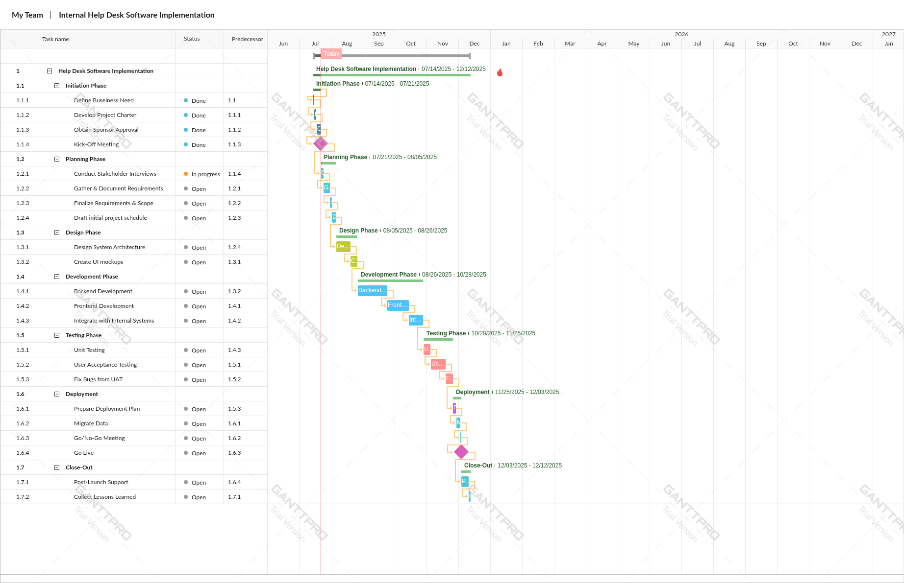
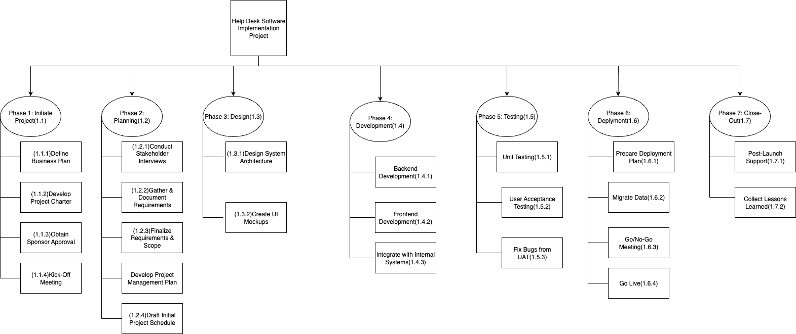

Project Timeline (Gantt Chart)

This Gantt chart illustrates the structured delivery plan for an internal help desk software implementation, following a traditional waterfall approach. Tasks are grouped by phase and linked with clear dependencies to ensure logical sequencing and coordination across teams. The chart demonstrates a focus on scope control, phase gating, and timely delivery through disciplined schedule management.
Work Breakdown Structure

The WBS broke the project into manageable work packages and informed both cost estimates and resource allocations.
Risk Register

All identified risks were assessed for probability and impact and tracked via the project’s risk log. Contingency planning was a key part of our success.
Stakeholder Engagement

Stakeholder mapping was used to build a communication plan tailored to each role’s influence and interest in the project.
Final Summary & Lessons Learned
- Met every milestone on schedule through disciplined planning and strong vendor alignment
- Used structured communication to reduce scope creep and RFIs
- Would enhance early-phase procurement processes in future projects